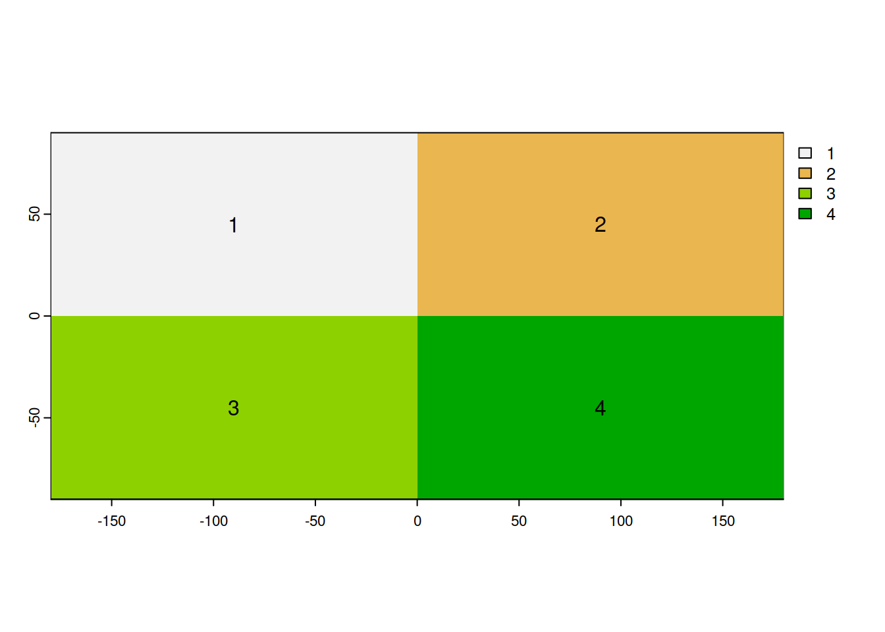

library(sf)Linking to GEOS 3.11.0, GDAL 3.5.1, PROJ 9.0.1; sf_use_s2() is TRUEst_point(c(-36.7,-72.5))POINT (-36.7 -72.5)SIG Avanzado (IMSE1017)
1.Describa el tipo de objeto “sf”. Para que tipo de datos geoespaciales se utiliza y que clase de objetos lo componen.
R: El tipo de objeto sf se utiliza para representar en R los datos espaciales de tipo simple feature, que corresponden a datos vectoriales. Están compuestos de un data.frame y un objeto sfc que corresponde a la list-column que almacena las geometrías espaciales. Cada geometría individual corresponde a un objeto sfg.
¿Para que tipo de datos geospaciales se utilizan los objetos “spatRaster”?
R: Para datos de tipo raster.
Enumere los tipos de geometias que se pueden trabajar con el paquete {sf}.
R:
Describa la diferencia entre un tipo de sistema de referencia de coordenadas proyectado y no proyectado. De un ejemplo de cada uno. R: Un sistema de referencia de coordenadas (SRC) proyectado es en el que la forma esférica/elipsoidal de la tierra se proyecta en un plano, a diferencia del no proyectado en el que la superficie de la tierra se considera como una elipsoide. Ejemplo de SRC no proyectado es el que tiene coordenadas geográficas y datum WGS84 (EPSG:4326). Un ejemplo de uno proyectado es el que tiene coordenadas UTM datum WGS84 y Huso 19 Sur (EPSG:32719).
Nombre cuatro paquetes de R para análisis de datos geoespaciales.
R: {sf}, {terra}, {tmap}, {sp}
¿Qué paquete de R es más reciente?
R: {terra} y {sf}
¿Cuántas dimensiones puede tener un punto en {sf}? De un ejemplo.
R: Puede tener hasta cuatro dimensiones. Un ejemplo el punto de ubicación de una intersección de dos calles se puede definir por latitud, longitud, elevación y dirección (XYZM).
De acuerdo a lo definido por {sf}, en un sfg ( geometría simple feature) que tipo de objetos de R nativos nos sirven para definir las siguientes geometrías:
library(sf)Linking to GEOS 3.11.0, GDAL 3.5.1, PROJ 9.0.1; sf_use_s2() is TRUEst_point(c(-36.7,-72.5))POINT (-36.7 -72.5)st_multipoint(matrix(c(-34.9, -72.6, -34.5, -76.4),ncol = 2))MULTIPOINT ((-34.9 -34.5), (-72.6 -76.4))Al crear un objeto raster con el paquete {terra} y el siguiente código:
x <- rast()
¿Qué caractéristicas tiene x en cuanto a extensión y sistema de referencia de coordenadas?
library(terra)terra 1.6.47(x <- rast())class : SpatRaster
dimensions : 180, 360, 1 (nrow, ncol, nlyr)
resolution : 1, 1 (x, y)
extent : -180, 180, -90, 90 (xmin, xmax, ymin, ymax)
coord. ref. : lon/lat WGS 84 ¿Cuál es el código EPSG para el sistema de referencias de coordenadas en coordenadas geográficas y datum WGS84? R: EPSG:4326
¿Que ventaja tiene realizar la simplificación de una geometria vectorial? Mencioné al menos una. R: Disminuye la complejidad del objeto y por ende disminuye el espacio de memoria que ocupa en disco.
¿Si cambio la resolución/extensión de un raster con {terra} se eliminan los datos? ¿Por qué?
R: si cambio la resolución se eliminan los datos ya que cambia la cantidad de pixeles que tiene. Si cambio la extensión, no se eliminan ya que se mantiene la cantidad de pixeles.
¿Si cambio el número de columnas/filas de un raster con {terra} se eliminan los valores? ¿Por qué?
R: Idem a la anterior
Que valores tendra el siguiente raster creado con {terra} en cada celda. Escriba los número en filas y columnas segun corresponda.
x <- rast(ncol=2,nrow=2)
values(x) <- 1:4
plot(x)
text(x)x <- rast(ncol=2,nrow=2)
values(x) <- c(1,1,1,1)
plot(x)
text(x)
y <- aggregate(x,2)
plot(y)I. Cree un script en R y súbalo acá. El script debe permitir resolver lo siguiente:
library(sf)
cuencas <- read_sf('../data/cuencas_Chile/Cuencas_BNA.shp')estaciones <- read_sf('../data/estaciones_chile/estaciones_chile.shp')library(terra)
prec <- rast('../data/CHELSA_pr_v2.1_20190101.tif')temp <- rast('../data/CHELSA_tas_v2.1_20190101.tif')#cantidad de geometrias
length(st_geometry(cuencas))[1] 139length(st_geometry(estaciones))[1] 1196# cantidad de variables
# menos uno por que la columna geometria no cuenta como variable
ncol(cuencas) - 1[1] 2ncol(estaciones) - 1[1] 11# nombres de las variables
names(cuencas)[1] "COD_CUEN" "NOM_CUEN" "geometry"names(estaciones) [1] "estacion" "latitud" "longitud" "altitud" "codreg"
[6] "codprov" "codcom" "comuna" "institucio" "area"
[11] "region" "geometry" # sistema de referencia de coordenadas
st_crs(cuencas)Coordinate Reference System:
User input: WGS 84 / UTM zone 19S
wkt:
PROJCRS["WGS 84 / UTM zone 19S",
BASEGEOGCRS["WGS 84",
DATUM["World Geodetic System 1984",
ELLIPSOID["WGS 84",6378137,298.257223563,
LENGTHUNIT["metre",1]]],
PRIMEM["Greenwich",0,
ANGLEUNIT["degree",0.0174532925199433]],
ID["EPSG",4326]],
CONVERSION["UTM zone 19S",
METHOD["Transverse Mercator",
ID["EPSG",9807]],
PARAMETER["Latitude of natural origin",0,
ANGLEUNIT["Degree",0.0174532925199433],
ID["EPSG",8801]],
PARAMETER["Longitude of natural origin",-69,
ANGLEUNIT["Degree",0.0174532925199433],
ID["EPSG",8802]],
PARAMETER["Scale factor at natural origin",0.9996,
SCALEUNIT["unity",1],
ID["EPSG",8805]],
PARAMETER["False easting",500000,
LENGTHUNIT["metre",1],
ID["EPSG",8806]],
PARAMETER["False northing",10000000,
LENGTHUNIT["metre",1],
ID["EPSG",8807]]],
CS[Cartesian,2],
AXIS["(E)",east,
ORDER[1],
LENGTHUNIT["metre",1]],
AXIS["(N)",north,
ORDER[2],
LENGTHUNIT["metre",1]],
ID["EPSG",32719]]st_crs(estaciones)Coordinate Reference System:
User input: WGS 84
wkt:
GEOGCRS["WGS 84",
DATUM["World Geodetic System 1984",
ELLIPSOID["WGS 84",6378137,298.257223563,
LENGTHUNIT["metre",1]]],
PRIMEM["Greenwich",0,
ANGLEUNIT["degree",0.0174532925199433]],
CS[ellipsoidal,2],
AXIS["latitude",north,
ORDER[1],
ANGLEUNIT["degree",0.0174532925199433]],
AXIS["longitude",east,
ORDER[2],
ANGLEUNIT["degree",0.0174532925199433]],
ID["EPSG",4326]]# codigo epsg
st_crs(cuencas)$epsg[1] 32719st_crs(estaciones)$epsg[1] 4326#resolución
res(prec)[1] 0.008333333 0.008333333res(temp)[1] 0.008333333 0.008333333#número de filas
nrow(prec)[1] 4619nrow(temp)[1] 4619#Sistema de referencia de coordenadas
crs(prec)[1] "GEOGCRS[\"WGS 84\",\n DATUM[\"World Geodetic System 1984\",\n ELLIPSOID[\"WGS 84\",6378137,298.257223600004,\n LENGTHUNIT[\"metre\",1]]],\n PRIMEM[\"Greenwich\",0,\n ANGLEUNIT[\"degree\",0.0174532925199433]],\n CS[ellipsoidal,2],\n AXIS[\"geodetic latitude (Lat)\",north,\n ORDER[1],\n ANGLEUNIT[\"degree\",0.0174532925199433]],\n AXIS[\"geodetic longitude (Lon)\",east,\n ORDER[2],\n ANGLEUNIT[\"degree\",0.0174532925199433]],\n ID[\"EPSG\",4326]]"crs(temp)[1] "GEOGCRS[\"WGS 84\",\n DATUM[\"World Geodetic System 1984\",\n ELLIPSOID[\"WGS 84\",6378137,298.257223563,\n LENGTHUNIT[\"metre\",1]]],\n PRIMEM[\"Greenwich\",0,\n ANGLEUNIT[\"degree\",0.0174532925199433]],\n CS[ellipsoidal,2],\n AXIS[\"geodetic latitude (Lat)\",north,\n ORDER[1],\n ANGLEUNIT[\"degree\",0.0174532925199433]],\n AXIS[\"geodetic longitude (Lon)\",east,\n ORDER[2],\n ANGLEUNIT[\"degree\",0.0174532925199433]],\n ID[\"EPSG\",4326]]"II.- Para la siguiente parte debe trabajar con la cuenca asignada por el profesor.
cuenca_limari <- cuencas[cuencas$NOM_CUEN == "Rio Limari",]
#transforma SRC de vectorial a raster
cuenca_limari <- st_transform(cuenca_limari,st_crs(prec))
# hace el crop, mask y trim
prec_limari <- crop(prec,cuenca_limari)
prec_limari <- mask(prec_limari,cuenca_limari)
plot(prec_limari)# hace el crop, mask y trim
temp_limari <- crop(temp,cuenca_limari)
temp_limari <- mask(temp_limari,cuenca_limari)
plot(temp_limari)# cambio SRC de estaciones a la del raster de precipitación
estaciones <- st_transform(estaciones,st_crs(prec))
estaciones_cuenca <- st_intersection(estaciones,cuenca_limari)Warning: attribute variables are assumed to be spatially constant throughout all
geometriesplot(prec_limari)
plot(estaciones_cuenca,add = TRUE,col = 'red')Warning in plot.sf(estaciones_cuenca, add = TRUE, col = "red"): ignoring all but
the first attributeplot(temp_limari)
plot(estaciones_cuenca,add = TRUE,col = 'red')Warning in plot.sf(estaciones_cuenca, add = TRUE, col = "red"): ignoring all but
the first attributeprec_temp <- c(prec_limari,temp_limari)Warning: [rast] SRS do not matchnames(prec_temp) <- c('precipitacion','temperatura')
plot(prec_temp)prec_temp_ex <- extract(prec_temp,estaciones_cuenca)buffer_estaciones <- st_buffer(estaciones_cuenca,1000)
plot(buffer_estaciones$geometry)writeRaster(prec_temp,'../data/precipitacion_temperatura_cuenca_limari.tif')write_sf(cuenca_limari,'../data/cuenca_limari.shp')write_sf(estaciones_cuenca,'estaciones_cuenca_limari.shp')write_sf(buffer_estaciones,'../data/buffer_estaciones_cuenca_limari.shp')